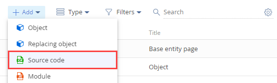
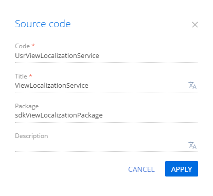

В Creatio реализована схема объекта Адрес контакта (ContactAddress). Колонка схемы ссылается на справочник Тип адреса (AddressType), который содержит локализуемую колонку Название (Name). Структура и связи таблиц представлены на рисунке ниже.
- [ContactAddress] — таблица базы данных, которая содержит перечень значений адресов контактов. Связана с таблицей [AddressType] по колонке [AddressTypeId].
- [AddressType] — таблица базы данных, которая содержит перечень типов адресов контактов. Колонка [Name] таблицы содержит перечень значений типов адресов на основном языке. Значения на дополнительных языках содержатся в таблице [SysAddressTypeLcz].
- [SysAddressTypeLcz] — автоматически генерируемая системная таблица базы данных, которая содержит перечень локализованных значений типов адресов контактов. Связана с таблицей [AddressType] по колонке [RecordId] и с таблицей [SysCulture] по колонке [SysCultureId]. Колонка [Name] таблицы содержит перечень локализованных значений типов адресов контактов для языковой культуры, которая указана в колонке [SysCultureId] текущей таблицы.
- [SysCulture] — системная таблица базы данных, которая содержит перечень языковых культур.
1. Создать схему объекта для представления
- Перейдите в раздел Конфигурация (Configuration) и выберите пользовательский пакет, в который будет добавлена схема.
-
На панели инструментов реестра раздела нажмите Добавить —> Объект (Add —> Object).
/scr_add_entity_schema.png)
-
В дизайнере объекта заполните свойства схемы:
- Код (Code) — "UsrVwContactAddress".
- Заголовок (Title) — "ContactAddressView".
- Родительский объект (Parent object) — выберите "BaseEntity".
-
В блоке свойств Поведение (Behavior) установите признак Представление в базе данных (Represent Structure of Database View).
2. Добавить колонки
-
Добавьте колонку, которая будет содержать перечень значений адресов контактов на основном языке.
- В контекстном меню узла Колонки (Columns) структуры объекта нажмите
 .
. -
В выпадающем меню нажмите Строка —> Строка (50 символов) (Text —> Text (50 characters)).

-
В дизайнере объекта заполните свойства добавляемой колонки:
- Код (Code) — "UsrAddress".
- Заголовок (Title) — "Address".
- В контекстном меню узла Колонки (Columns) структуры объекта нажмите
-
Добавьте колонку, которая будет содержать перечень типов адресов контактов на дополнительном языке.
- В контекстном меню узла Колонки (Columns) структуры объекта нажмите .
-
В выпадающем меню нажмите Строка —> Строка (50 символов) (Text —> Text (50 characters)).
-
В дизайнере объекта заполните свойства добавляемой колонки:
- Код (Code) — "UsrAddressType".
- Заголовок (Title) — "AddressType".
- Установите признак Локализуемый текст (Localizable text).
- На панели инструментов дизайнера объектов нажмите Сохранить (Save), а затем Опубликовать (Publish).
- В контекстном меню узла Колонки (Columns) структуры объекта нажмите
3. Создать представления в базе данных
-
Создайте представление [UsrVwContactAddress] в базе данных. Для этого выполните SQL-запрос.
-
Создайте локализуемое представление [SysUsrVwContactAddressLcz] в базе данных. Для этого выполните SQL-запрос.
В результате при чтении данных с помощью EntitySchemaQuery из колонки [UsrAddressType] представления [UsrVwContactAddress] будут отображены корректные значения для разных языков.
Результат выполнения примера
Для проверки результата выполнения примера создайте пользовательский веб-сервис с аутентификацией на основе cookies.
1. Создать схему Исходный код
- Перейдите в раздел Конфигурация (Configuration) и выберите пользовательский пакет, в который будет добавлена схема.
-
На панели инструментов реестра раздела нажмите Добавить —> Исходный код (Add —> Source code).
 -
В дизайнере схем заполните свойства схемы:
- Код (Code) — "UsrViewLocalizationService".
- Заголовок (Title) — "UsrViewLocalizationService".
Для применения заданных свойств нажмите Применить (Apply).
2. Создать класс сервиса
- В дизайнере схем добавьте пространство имен Terrasoft.Configuration.
- C помощью директивы using добавьте пространства имен, типы данных которых будут задействованы в классе.
- Добавьте название класса, которое соответствует названию схемы (свойство Код (Code)).
- В качестве родительского класса укажите System.Web.SessionState.IReadOnlySessionState.
- Для класса добавьте атрибуты [ServiceContract] и [AspNetCompatibilityRequirements(RequirementsMode = AspNetCompatibilityRequirementsMode.Required)].
3. Реализовать методы класса
-
Реализуйте метод, который вернет перечень типов адресов контактов и значений адресов контактов из созданного нелокализуемого представления [UsrVwContactAddress]. В дизайнере схем добавьте в класс метод public string GetNonLocalizableView(), который реализует конечную точку пользовательского веб-сервиса. С помощью EntitySchemaQuery метод отправит запрос к базе данных.
-
Реализуйте метод, который вернет перечень типов адресов контактов и значений адресов контактов из созданного локализуемого представления [UsrVwContactAddress]. В дизайнере схем добавьте в класс метод public string GetLocalizableView(), который реализует конечную точку пользовательского веб-сервиса. С помощью EntitySchemaQuery метод отправит запрос к базе данных.
Исходный код пользовательского веб-сервиса UsrViewLocalizationService представлен ниже.
На панели инструментов дизайнера нажмите Сохранить (Save), а затем Опубликовать (Publish).
Результат работы пользовательского веб-сервиса
В результате выполнения примера в Creatio появится пользовательский веб-сервис UsrViewLocalizationService с конечными точками GetLocalizableView и GetNonLocalizableView.
Авторизуйтесь в приложении и из браузера обратитесь к конечной точке GetLocalizableView веб-сервиса.
В результате будет получена выборка, которая состоит из локализуемых значений типов адресов контактов и значений адресов контактов.
Из браузера обратитесь к конечной точке GetNonLocalizableView веб-сервиса.
В результате будет получена выборка, которая состоит из нелокализуемых значений типов адресов контактов и значений адресов контактов.